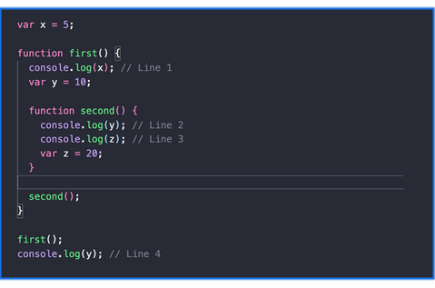

JS Assignment ques 3
Tasks:
- Predict the output of the given snippet.
- Explain how hoisting affects the execution of console.log(z) in second().
- Explain the scope chain for console.log(y) in
second().
- What happens when console.log(y)
is executed outside first() (Line 4)? Why?
-
Modify the code to use let instead of var and
observe any differences.
